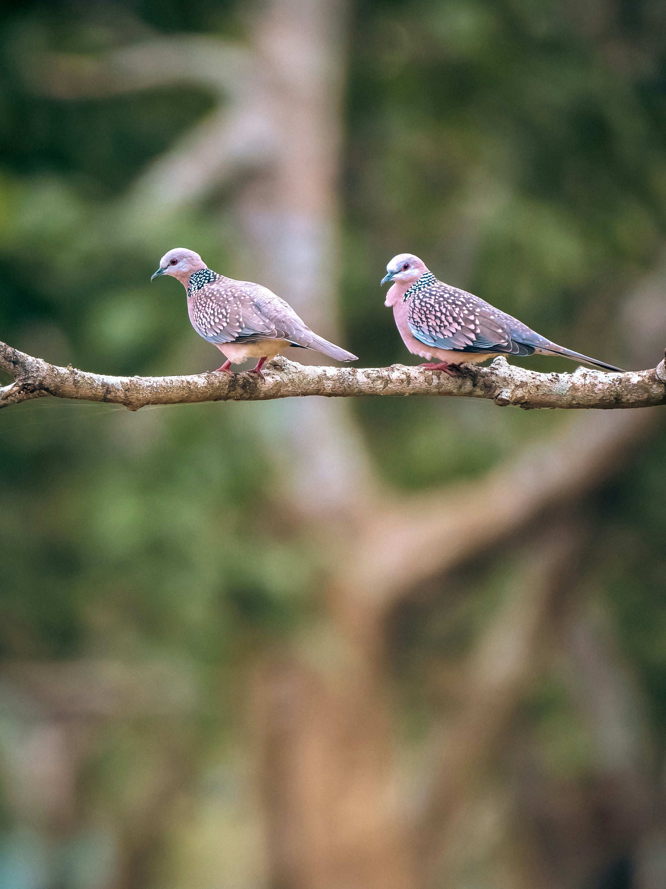

The Spotted Dove is a medium-sized dove with a soft pinkish-grey body, dark wings, and a distinctive black-and-white spotted patch on the sides of its neck. It is a highly adaptable species and commonly occurs in gardens, farmland, woodland, villages, and cities. It feeds mainly on seeds and grains and usually forages on the ground. Compared with the similar Common Myna, it is distinguished by the combination of features described above. Its preference for gardens, farmland, woodland, scrub, villages, and urban areas also helps separate it from species that use different habitats. Its characteristic behaviour, including usually forages on the ground singly or in pairs and may gather in groups around food, provides another useful field clue. Taken together, these differences make it easier to distinguish from similar species when the bird is seen clearly.